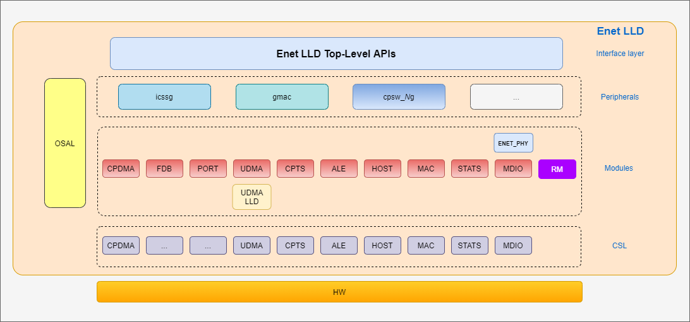

4.7. ENET¶
4.7.1. Introduction¶
Enet LLD is an unified Ethernet driver that support Ethernet peripherals found in TI SoCs, such as CPSW and ICSSG. Enet LLD supports CPSW_2G and CPSW_9G in J721E devices.
The diagram below shows the overall software architecture of the Enet low-level driver. A top-level driver layer provides the interface that the applications can use to configure the switch and to send/receive Ethernet frames.
For instance, the CPSW support in the Enet driver consists of several software submodules that mirror those of the CPSW hardware, like DMA, ALE, MAC port, host port, MDIO, etc. Additionally, the Enet driver also includes PHY driver support as well as a resource manager to administrate the CPSW resources.
Enet LLD relies on other PDK drivers like UDMA for data transfer to/from the Ethernet peripheral’s host port to the other processing cores inside the TI SoC devices. For the lower level access to the hardware registers, Enet LLD relies on the Chip Support Library (CSL).
4.7.2. User Interface¶
For details about individual fields of this library structure, see the PDK doxygen documentation
4.7.2.1. APIs¶
The Enet LLD APIs can be broadly divided into two categories: control and data path. The control APIs can be used to configure all Ethernet hardware submodules like FDB, MAC port, host port, MDIO, statistics, as well as PHY drivers and resource management. The data path APIs are exclusive for the DMA-based data transfers between the TI SoC processing cores and the Ethernet peripheral.
API reference for application:
#include <ti/drv/enet/enet.h>
The main APIs of the Enet LLD are the following:
Enet_open()
Enet_close()
Enet_ioctl()
Enet_poll()
Enet_periodicTick()
4.7.2.1.1. Data Path APIs¶
The main Enet LLD functions used to send and receive packets are:
EnetDma_openRxCh()
EnetDma_closeRxCh()
EnetDma_openTxCh()
EnetDma_closeTxCh()
EnetDma_retrieveRxPktQ()
EnetDma_submitRxPktQ()
EnetDma_retrieveTxPktQ()
EnetDma_submitTxPktQ()
It’s worth noting that the control path APIs are mainly IOCTL-based, and the data path APIs are direct functions in order to avoid any additional overhead associated with IOCTL calls as DMA data operations occur highly frequently.
4.7.2.1.2. Scatter-Gather¶
Starting in SDK 8.5, Enet LLD provides support for UDMA scatter-gather feature for packet transmission only. Scatter-gather is currently not supported for packet reception.
There are Enet LLD API changes introduced for scatter-gather which break compatibility with previous SDKs. The main changes in the parameters used by the application to pass the Ethernet frame buffer and the buffer length to the driver.
For the sake of comparison with previous API, let’s consider the case of a single continuous buffer (i.e. number of scatter segments of 1).
Parameter |
SDK 8.4 or older |
SDK 8.5+ |
|---|---|---|
Buffer pointer |
|
|
Original buffer length |
|
|
Filled buffer length |
|
|
The application can pass up to four segments for packet transmission as defined by
ENET_UDMA_CPSW_MAX_SG_LIST. It’s worth noting that Enet LLD uses the same
EnetDma_PktInfo type for packet reception but only a single segment is enforced
as scatter-gather for packet reception is currently not enabled.
The scatter-gather list information is provided by the application to the driver
via EnetUdma_PktInfo::sgList parameter of the packet info structure. Application
must set the number of segments (EnetUdma_PktInfo::sgList.numScatterSegments),
and the buffer pointer and length of each segment in EnetUdma_PktInfo::sgList.list[]
array.
The relevant structures are shown below:
/*! Scatter gather list entry */ typedef struct EnetUdma_SGListEntry_s { /*! Pointer to scatter fragment */ uint8_t *bufPtr; /*! Length of valid data in the scatter fragment */ uint32_t segmentFilledLen; /*! Length of allocated buffer for scatter fragment */ uint32_t segmentAllocLen; } EnetUdma_SGListEntry; /*! Packet scatter list info */ typedef struct EnetUdma_SGList_s { /*! Number of valid scatter segments in the packet */ uint32_t numScatterSegments; /*! Array of scatterList having info on each individual scatter segement */ EnetUdma_SGListEntry list[ENET_UDMA_CPSW_MAX_SG_LIST]; } EnetUdma_SGList; /*! Packet data structure */ typedef struct EnetUdma_PktInfo_s { ... /*! Scatter Gather list information for packets to be transmitted. */ EnetUdma_SGList sgList; } EnetUdma_PktInfo; /*! Opaque handle that represents a DMA packet */ typedef struct EnetUdma_PktInfo_s EnetDma_Pkt;
Scatter-gather for packet transmission is also enabled in Enet LLD integration with
lwIP stack. Note that LWIP_NETIF_TX_SINGLE_PBUF must be disabled for lwIP to
pass multiple segments to the adaptation layer and to the Enet driver.
Scatter-gather feature is enabled by default in Enet LLD loopback test and lwIP example applications.
4.7.2.1.3. IOCTL Interface¶
IOCTLs are system calls that take an argument specifying the command code and
can take none or additional parameters via Enet_IoctlPrms argument.
IOCTL are used by all Enet submodules except for DMA.
The Enet_IoctlPrms parameter structure consists of input and output
argument pointers and their corresponding size. The following helper macros are
provided to help construct the IOCTL params:
ENET_IOCTL_SET_NO_ARGS(prms). Used for IOCTL commands that take no parameters.ENET_IOCTL_SET_IN_ARGS(prms, in). Used for IOCTL commands that take input parameters but don’t output any parameter.ENET_IOCTL_SET_OUT_ARGS(prms, out). Used for IOCTL commands that don’t take input parameters but return output parameters.ENET_IOCTL_SET_INOUT_ARGS(prms, in, out). Used for IOCTL commands that take input parameters and also return output parameters.
where prms in a pointer to Enet_IoctlPrms variable, in is the pointer
to IOCTL input argument and out is the pointer to IOCTL output argument.
It’s recommended that the application doesn’t set the Enet_IoctlPrms
members individually, but only through the helper macros listed above.
Please refer to the individual IOCTL command to find out if it requires input and/or output parameters.
4.7.3. lwIP Integration¶
See lwIP User’s Guide for further information about lwIP integration into PDK using Enet LLD, and NDK-to-lwIP migration guide.
4.7.4. TSN Integration¶
See Enet LLD TSN User’s Guide for further information about TSN stack integration into PDK using Enet LLD.
Note: This release integrates gPTP stack only.
4.7.5. Enet EST/TAS Support¶
See Enet EST/TAS Support for further information about EST/TAS implementation for CPSW using Enet LLD.
4.7.6. Application¶
4.7.6.1. Examples¶
Enet LLD comes with a set of examples demonstrating the usage of driver APIs. The examples are:
enet_loopback: Internal (MAC port) or external loopback test.
enet_lwip_example: TCP/IP stack integration using lwIP.
enet_tsn_example: gPTP stack integration example app.
enet_est: CPSW Time Aware Shaper (EST) test app.
Name |
Description |
Expected Results |
Cores Supported |
Peripherals |
|---|---|---|---|---|
Loopback |
Enet Loopback example demonstrates basic packet send and receive on an Ethernet peripheral configured in MAC loopback or PHY loopback. |
All packets sent from the example application shall be received back after being looped in MAC or PHY. |
mcu1_0 |
CPSW_2G |
mcu2_0 |
CPSW_9G |
|||
mcu2_1 |
CPSW_2G |
|||
lwIP |
Enet lwIP example demonstrates Enet driver integration with open source lwIP TCP/IP stack. The example enables DHCP client, it can get an IP address when connected to a network. |
lwIP example application shall be able to get an IP address when connected to a network. User can test ‘ping’, ‘echo’ and ‘iperf’. |
mcu1_0 |
CPSW_2G |
mcu2_0 |
CPSW_9G |
|||
mcu2_1 |
CPSW_2G |
|||
TSN |
Enet TSN example demonstrates TSN stack integration in Enet LLD. Note that this release integrantes only gPTP stack. |
TSN example application shall be able to exchange gPTP packets with a partner devices (EVM or PC) and achieve time synchronization. |
mcu2_0 |
CPSW_9G |
EST |
Enet EST example demonstrates Traffic Shaping and Scheduling the traffic based on 802.1Qbv |
This example schedules traffic for 8 packets with different PCP priorities and sent via CPSW. Received packets will be discarded in this example. |
mcu1_0 |
CPSW_2G |
mcu2_0 |
CPSW_9G |
|||
mcu2_1 |
CPSW_2G |
4.7.6.1.1. Enet loopback¶
This example exercises the MAC loopback functionality of the hardware. The example is developed and tested on both bare metal and TI RTOS code base. The Ethernet peripheral is opened with default initialization parameters and the MAC loopback is enabled.
A Tx channel and a Rx flow are opened to enable data transfers. Packets are transmitted from the Switch R5F (Main R5F0_0) to the host port using the Tx channel. These packets are routed back to the host port by the switch hardware as the internal loopback feature is enabled. These packets are then transmitted to the Switch R5F by the Rx flow and the application is notified.
The Tx and Rx functions in the example are set to transmit and receive 10000 packets. After reaching the count of 10000, the application closes the Tx channel, Rx flow, peripheral (i.e. CPSW) and restarts the application for a configurable number of times. Restarting the loopback test application ensures that there aren’t any memory leaks, and the hardware is closed properly and can be reopened any time.
4.7.6.1.2. Enet LWIP¶
See Enet lwIP Example for further information about lwIP stack Example.
4.7.6.1.3. Enet EST¶
See Enet EST Example for further information about CPSW EST/TAS Example.
4.7.6.1.4. Enet TSN¶
See Enet TSN Example for further information about TSN stack gPTP Example.
4.7.6.1.5. Enet Multiport¶
Not supported for this SoC.
4.7.6.1.6. Enet TAS¶
Not supported for this SoC.